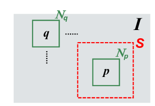
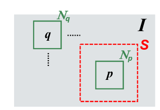

Non-local mean filter
Another well-known non-linear edge preserving smoothing Image filters . The key idea is that the similarity among patches spread over the image can be deployed to achieve Noise reduction. 
Another well-known non-linear edge preserving smoothing Image filters . The key idea is that the similarity among patches spread over the image can be deployed to achieve Noise reduction. 